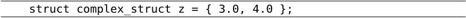
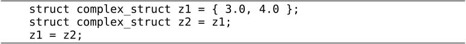
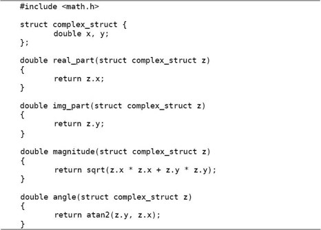

在编程语言中，最基本的、不可再分的数据类型称为基本类型（Primitive Type），例如整型、浮点型；根据语法规则由基本类型组合而成的类型称为复合类型（Compound Type），例如字符串是由很多字符组成的。有些场合下要把复合类型当做一个整体来用，而另外一些场合下需要分解组成这个复合类型的各种基本类型，复合类型的这种两面性为数据抽象（Data Abstraction）奠定了基础。参考文献[12]的1.1节指出，在学习一门编程语言时要特别注意以下三个方面：
1．这门语言提供了哪些Primitive，比如基本类型，比如基本运算符、表达式和语句。
2．这门语言提供了哪些组合规则，比如基本类型如何组成复合类型，比如简单的表达式和语句如何组成复杂的表达式和语句。
3．这门语言提供了哪些抽象机制，包括数据抽象和过程抽象（Procedure Abstraction）。
本章以结构体为例讲解数据类型的组合和数据抽象。至于过程抽象，我们在第4.2节已经见过最简单的形式，就是把一组语句用一个函数名封装起来，当做一个整体使用，本章将介绍更复杂的过程抽象。
现在我们用C语言表示一个复数。从直角坐标系来看，复数由实部和虚部组成，从极坐标系来看，复数由模和辐角组成，两种坐标系可以相互转换，如图7.1所示。
图7.1 复数
如果用实部和虚部表示一个复数，我们可以写成由两个double型组成的结构体：
这一句定义了标识符complex_struct（同样遵循标识符的命名规则），这种标识符在C语言中称为Tag，struct complex_struct { double x, y; }整个可以看作一个类型名⑮，就像int或double一样，只不过它是一个复合类型，如果用这个类型名来定义变量，可以这样写：
这样z1和z2就是两个变量名，变量定义后面带个;号是我们早就习惯的。但即使像先前的例子那样只定义了complex_struct这个Tag而不定义变量，}后面的;号也不能少。这点一定要注意，类型定义也是一种声明，声明都要以;号结尾，结构体类型定义的}后面少;号是初学者常犯的错误。不管是用上面两种形式的哪一种定义了complex_struct这个Tag，以后都可以直接用struct complex_struct来代替类型名了。例如可以这样定义另外两个复数变量：
如果在定义结构体类型的同时定义了变量，也可以不必写Tag，例如：
但这样就没办法再次引用这个结构体类型了，因为它没有名字。每个复数变量都有两个成员（Member）x和y，可以用.后缀运算符（.号，Period）来访问，这两个成员的存储空间是相邻的⑯，合在一起组成复数变量的存储空间。看下面的例子：
例7.1 定义和访问结构体
注意上例中变量x和变量z的成员x的名字并不冲突，因为变量z的成员x只能通过表达式z.x来访问，编译器可以从语法上区分哪个x是变量x，哪个x是变量z的成员x，第18.3节会讲到这两个标识符x属于不同的命名空间。结构体Tag也可以定义在全局作用域中，这样定义的Tag在其定义之后的各函数中都可以使用。例如：
结构体变量也可以在定义时初始化，例如：

Initializer中的数据依次赋给结构体的各成员。如果Initializer中的数据比结构体的成员多，编译器会报错，但如果只是末尾多个逗号则不算错。如果Initializer中的数据比结构体的成员少，未指定的成员将用0来初始化，就像未初始化的全局变量一样。例如以下几种形式的初始化都是合法的：
注意，z1必须是局部变量才能用另一个变量x的值来初始化它的成员，如果是全局变量就只能用常量表达式来初始化。这也是C99的新特性，C89只允许在{}中使用常量表达式来初始化，无论是初始化全局变量还是局部变量。
{}这种语法不能用于结构体的赋值，例如这样是错误的：
以前我们初始化基本类型的变量所使用的Initializer都是表达式，表达式当然也可以用来赋值，但现在这种由{}括起来的Initializer并不是表达式，所以不能用来赋值⑰。Initializer的语法总结如下：
Designated Initializer是C99引入的新特性，用于初始化稀疏（Sparse）结构体和稀疏数组很方便。有些时候结构体或数组中只有某一个或某几个成员需要初始化，其他成员都用0初始化即可，用Designated Initializer语法可以很方便地针对每个成员做初始化（Memberwise Initialization）例如：
数组的Memberwise Initialization语法将在下一章介绍。
结构体类型用在表达式中有很多限制，不像基本类型那么自由，比如+ - * /等算术运算符和&& || !等逻辑运算符都不能作用于结构体类型，if语句、while语句中的控制表达式的值也不能是结构体类型。严格来说，可以做算术运算的类型称为算术类型（Arithmetic Type），算术类型包括整型和浮点型。可以表示零和非零，可以参与逻辑与、或、非运算或者做控制表达式的类型称为标量类型（Scalar Type），标量类型包括算术类型和以后要讲的指针类型，详见图22.5。
结构体变量之间使用赋值运算符是允许的，用一个结构体变量初始化另一个结构体变量也是允许的，例如：

同样地，z2必须是局部变量才能用变量z1的值来初始化。既然结构体变量之间可以相互赋值和初始化，也就可以当做函数的参数和返回值来传递：
这个函数实现了两个复数相加，如果在main函数中这样调用：
那么调用传参的过程如图7.2所示。
图7.2 结构体传参
变量z在main函数的栈帧上，参数z1和z2在add_complex函数的栈帧上，z的值分别赋给z1和z2。在这个函数里，z2的实部和虚部被累加到z1中，然后return z1;可以看成是：
1．用z1初始化一个临时变量。
2．函数返回并释放栈帧。
3．把临时变量的值赋给变量z，释放临时变量。
由.后缀运算符组成的表达式能不能做左值取决于.后缀运算符左边的操作数能不能做左值。在上面的例子中，z是一个变量，可以做左值，因此表达式z.x也可以做左值，但表达式add_complex(z, z).x只能做右值而不能做左值，因为add_complex(z, z)不能做左值。
现在我们来实现一个完整的复数运算程序。在上一节我们已经定义了复数的结构体类型，现在需要围绕它定义一些函数。复数可以用直角坐标或极坐标表示，直角坐标做加减法比较方便，极坐标做乘除法比较方便。如果我们定义的复数结构体是直角坐标的，那么应该提供极坐标的转换函数，以便在需要的时候可以方便地取它的模和辐角：

此外，我们还提供两个函数用来构造复数变量，参数既可以是直角坐标也可以是极坐标，在函数中自动做相应的转换然后返回构造的复数变量：
在此基础上就可以实现复数的加减乘除运算了：
可以看出，复数加减乘除运算的实现并没有直接访问结构体complex_struct的成员x和y，而是把它看成一个整体，通过调用相关函数来取它的直角坐标和极坐标。这样就可以非常方便地替换掉结构体complex_struct的存储表示，例如改用极坐标来存储：
虽然结构体complex_struct的存储表示做了这样的改动，add_complex、sub_complex、mul_complex、div_complex这几个复数运算的函数却不需要做任何改动，仍然可以用，原因在于这几个函数只把结构体complex_struct当做一个整体来使用，而没有直接访问它的成员，因此也不依赖于它有哪些成员。我们结合图7.3具体分析一下。
图7.3 数据抽象
这是一种抽象的思想。其实“抽象”这个概念并没有那么抽象，简单地说就是“提取公因式”：ab+ac=a(b+c)。如果a变了，ab和ac这两项都需要改，但如果写成a(b+c)的形式就只需要改其中一个因子。
在我们的复数运算程序中，复数有可能用直角坐标或极坐标来表示，我们把这个有可能变动的因素提取出来组成复数存储表示层：real_part、img_part、magnitude、angle、make_from_real_img、make_from_mag_ang。这一层看到的数据是结构体的两个成员x和y，或者r和A，如果改变了结构体的实现就要改变这一层函数的实现，但函数接口不改变，因此调用这一层函数接口的复数运算层不需要改变。复数运算层看到的数据只是一个抽象的“复数”的概念，知道它有直角坐标和极坐标，可以调用复数存储表示层的函数得到这些坐标。再往上看，其他使用复数运算的程序看到的数据是一个更为抽象的“复数”的概念，只知道它是一个数，像整数、小数一样可以加减乘除，甚至连它有直角坐标和极坐标也不需要知道。
这里的复数存储表示层和复数运算层称为抽象层（Abstraction Layer），从底层往上层来看，复数越来越抽象了，把所有这些层组合在一起就是一个完整的系统。组合使得系统可以任意复杂，而抽象使得系统的复杂性是可以控制的，任何改动都只局限在某一层，而不会波及整个系统。著名的计算机科学家Butler Lampson说过：“All problems in computer science can be solved by another level of indirection.”这里的indirection其实就是abstraction的意思。
1．在本节的基础上实现一个打印复数的函数，打印的格式是x+yi，如果实部或虚部为0则省略，例如：1.0、-2.0i、-1.0+2.0i、1.0-2.0i。最后编写一个main函数测试本节的所有代码。想一想这个打印函数应该属于图7.3中的哪一层？
2．实现一个用分子分母的格式来表示有理数的结构体rational以及相关的函数，rational结构体之间可以做加减乘除运算，运算的结果仍然是rational。测试代码如下：
注意要约分为最简分数，例如1/8和-1/8相减的打印结果应该是1/4而不是2/8，可以利用第5.3节习题中的Euclid算法来约分。在动手编程之前先思考一下这个问题实现了什么样的数据抽象，抽象层应该由哪些函数组成。
在上一节中，我们通过一个复数存储表示抽象层把complex_struct结构体的存储格式和上层的复数运算函数隔开，complex_struct结构体既可以采用直角坐标也可以采用极坐标存储。但有时候需要同时支持两种存储格式，比如先前已经采集了一些数据存在计算机中，有些数据是以极坐标存储的，有些数据是以直角坐标存储的，如果要把这些数据都存到complex_struct结构体中怎么办？一种办法是规定complex_struct结构体采用直角坐标格式，直角坐标的数据可以直接存入complex_struct结构体，而极坐标的数据先转成直角坐标再存，但由于浮点数的精度有限，转换总是会损失精度的。这里介绍另一种办法，complex_struct结构体由一个数据类型标志和两个浮点数组成，如果数据类型标志为0，那么两个浮点数就表示直角坐标，如果数据类型标志为1，那么两个浮点数就表示极坐标。这样，直角坐标和极坐标的数据都可以适配（Adapt）到complex_struct结构体中，无须转换和损失精度：
enum关键字的作用和struct关键字类似，把coordinate_type这个标识符定义为一个Tag，struct complex_struct表示一个结构体类型，而enum coordinate_type表示一个枚举（Enumeration）类型。枚举类型的成员是常量，它们的值由编译器自动分配，例如定义了上面的枚举类型之后，RECTANGULAR就表示常量0，POLAR表示常量1。如果不希望从0开始分配，可以这样定义：
这样，RECTANGULAR就表示常量1，而POLAR表示常量2。枚举常量也是一种整型，其值在编译时确定，因此也可以出现在常量表达式中，可以用于初始化全局变量或者作为case分支的判断条件。
有一点需要注意，虽然结构体的成员名和变量名不在同一命名空间中，但枚举的成员名却和变量名在同一命名空间中，所以会出现命名冲突。例如这样是不合法的：
complex_struct结构体的格式变了，就需要修改复数存储表示层的函数，但只要保持函数接口不变就不会影响到上层函数。例如：
1．本节只给出了make_from_real_img和make_from_mag_ang函数的实现，请读者自己实现real_part、img_part、magnitude、angle这些函数。
2．编译运行下面这段程序：
结果是什么？并解释一下为什么是这样的结果。
结构体也是一种递归定义：结构体的成员具有某种数据类型，而结构体本身也是一种数据类型。换句话说，结构体的成员可以是另一个结构体，即结构体可以嵌套定义。例如我们在复数的基础上定义复平面上的线段：
从第7.1节讲的Initializer的语法可以看出，Initializer也可以嵌套，因此嵌套结构体可以嵌套地初始化，例如：
也可以平坦（Flat）地初始化。例如：
甚至可以把两种方式混合使用（这样可读性很差，应该避免）：
利用C99的新特性也可以做Memberwise Initialization，例如⑱：
访问嵌套结构体的成员要用到多个.后缀运算符，例如：